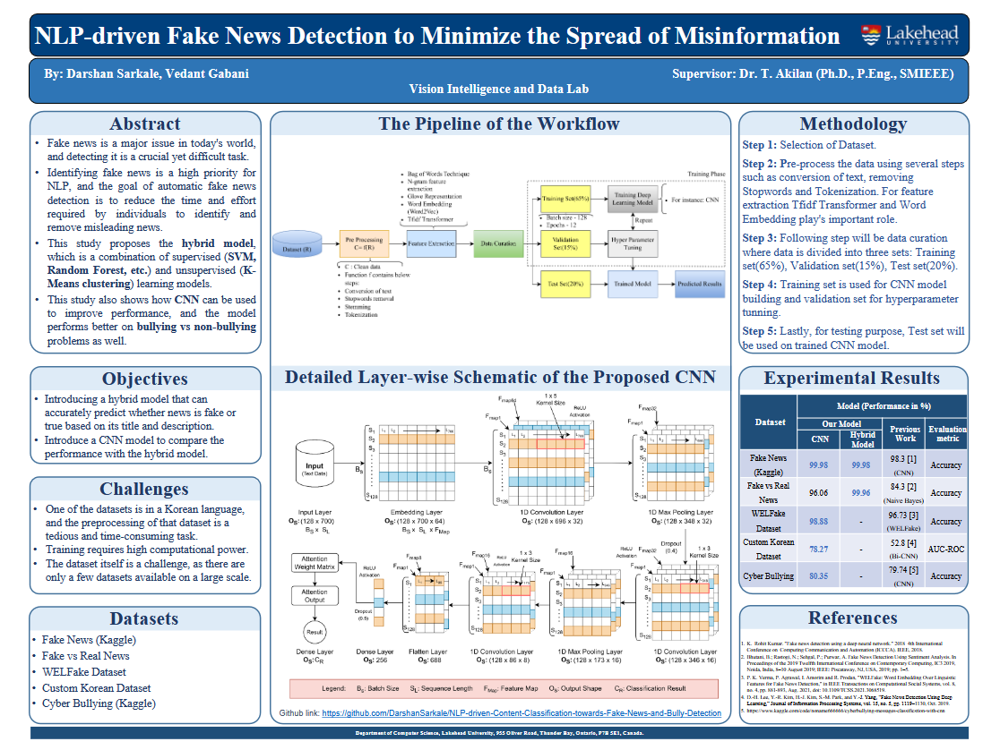

Featured Researches
Discover our latest breakthroughs and ongoing research projects that are making a difference.

Multi-class
Brain Tumor Segmentation using Graph Attention Network

NLP-driven
Content Classification Towards Fake News and Bully Detection

Improving Pavement
Crack Segmentation Using Attention Mechanism and Self-gated Activation